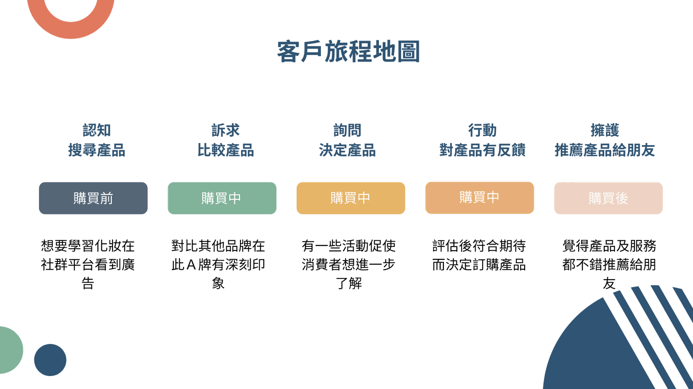

近期「對話式商務」相當熱門那什麼是對話式商務呢？簡單來說就是透過對話對讓企業提升營收，那對話是不是限制於實際與客戶見面交談的方式呢？對話商務方法有很多種，不只侷限在見面交談，而我們如何將這些對話商務進行優化提升客戶體驗呢？觀看內文了解更多對話商務
如何透過對話式商務優化使用者體驗
客戶旅程地圖可分為三大區塊分別為購買前、購買中、購買後。參考下圖

購買前｜認知
顧客多數經驗是被動接收品牌訊息，而渠道可分成社群媒體及朋友介紹，這兩種方式通常是大家了解到品牌的第一步，也是開啟體驗的第一步。
購買中｜訴求
此階段顧客的問題尋求解決辦法，顧客在過程中會發現產品，而這個階段於銷售漏斗中最為重要的階段，需要透過精美的外觀及產品特色吸引消費者，透過對話工具建立聯繫，解決他們的問題
購買中｜詢問
顧客考慮過程可能會與其他家產品進行功能或價格比較，利用對話的力量為顧客提供更多詳細資訊協助顧客了解產品，強化服務體驗。
購買中｜行動
顧客選擇了你拿到訂單、順利成交，生意並不是就結束，透過對話建立好的人脈與口碑，持續提供認同感，並在顧客有問題時立即解決，強化消費者信任。
購買後｜擁護
顧客到達最後一關是相當難得的，若到達此表示整個旅程中你都做得很好，顧客也願意為這個賣家或企業背書，持續與顧客加強對話提升品牌忠誠度，讓顧客認為品牌就像是生活的一部分，像是朋友一樣。
對話式商務的類型或方式有哪些？
實體對話
此類方法是最常見大家最熟悉的方式，在過去顧客會到實體門市與銷售員詢問產品、價格、優惠，銷售員可以即時回覆您任何問題，甚至還可以同時服務其他客戶，比起信件或電話方式可以更清楚讓顧客獲得需要的產品。
聊天機器人
許多品牌企業現在也有提供聊天機器人這類服務，聊天機器人提供24小時即時回覆，顧客可至企業官網或社群通路與機器人對話一步一步了解產品使用方法或是售後退換方法，更為顧客打造一對一個人化服務的體驗，透過與機器人聊天還可以推薦適合的產品給顧客。
聊天平台
原先line、facebook messenger或其他聊天平台，都只是顧客用來與朋友聊天的地方，因顧客有時候會出現急切的需求需與企業溝通，而演變成顧客對話方式之一，這樣可以直接與企業對話及反饋的方式，有效提升參與度和顧客對品牌的忠誠度，而根據研究指出70％的互動客戶花費是沒有互動客戶的2倍。
語音助理
原先語音助理僅是透過語音輸入，找到相應的指令且執行。現今語音助理在聊天互動過程中甚至可以置入產品或分析行為，當你詢問語音助理某產品後，你會在社群廣告中看到剛剛詢問語音助理的相似產品。
對話式商務｜消費行為分析
- 75% 的消費者更有可能從聊天平台跟品牌購買產品 ( google )
- 70%客戶選擇嘗試使用自助服務聯繫客服，但僅只有 9%自助服務解決問題 ( Gartner )
- 89% 的企業將客戶體驗視為提高客戶忠誠度和保留率的關鍵因素 ( Markinblog )
- 與客戶服務打交道時：44% 的客戶重視“把事情做好”（有效性、準確性、安全性），39% 的客戶重視“讓它不費吹灰之力”（與現場代理取得成功、對方法的信任、速度、易用性、方便），17% 的值“依照個人的條件”（友好、個性化、創造力、渠道選擇）（Aspect）
- 營銷電子郵件的打開率約為 20%，而手機訊息的打開率約為 98% (Mobile Marketing Watch)
根據上面分析，我們可以了解聊天平台及聊天機器人服務對於現代消費者的重要性，以及良好的顧客體驗可以帶來更多營收，如果您想透過以上方式來提升客戶體驗，卻不知道該怎麼運用工具，歡迎與我們聯繫，目前Ai3人工智能有提供智能機器人、通路平台管理、資料庫匯整、行動客服…等等多種解決方案。
透過對話式商務可以降低企業成本嗎？Markinblog指出與留住老客戶相比，獲得新客戶的成本高達7 倍，您可以透過對話商務來降低企業找新客的成本。
透過對話是商務維護客戶忠誠度好處是？忠誠客戶比新客戶多花費67%，在生活對話中讓消費者認為企業就像是朋友的存在，提升客戶對品牌的忠誠度。
📍延伸活動推薦【後疫情時代，以對話式商務搶攻數位商機】論壇
對話式商務與OMO成為數位趨勢，在後疫情時代面臨產業環境的衝擊下，讓眾多企業思考該如何提升對外的商業服務質量，以創造更多商機；Ai3人工智能特別邀請痞客邦、德昂資訊 分享客服趨勢、OMO應用、客戶大數據分析議題，誠摯邀請您共襄盛舉，為您的企業拓展服務能量，搶攻數位新商機，締造客戶服務價值！
•活動時間：2022年5月27日
•活動費用：免費
•活動報名與詳情：https://pse.is/44xwnb
•主辦單位：Ai3人工智能